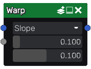

Warp node
The Warp node is variadic and deform one or more input images according to the derivative of a grayscale image.
Inputs
The Warp node accepts two inputs:
The Source input is the image to be deformed.
The Displace input is a grayscale image whose derivative will be used to deform the source.
Outputs
The Warp node outputs the deformed image.
Parameters
The Warp node has three parameters:
mode, that defines how the warp node calculates the offset it applies. Slope offsets by a distance calculated from the slope, and Distance to top offsets by a distance calculated from the slope and the distance to the top (this mode makes it posible to make all points of a slope get their value from the top, hence generating mosaic-like patterns).
strength to scale the warp effect.
epsilon is used to evaluate the second input’s derivative
Example images